第 4 章 项目构建与超参数调优#
本章解决：一个 DL 项目从想法到可用模型，中间的完整工程流程——定指标、立基线、备数据、诊断瓶颈、调参、正则化，最后用 CIFAR-10 项目把准确率从约 65% 拉到 90%。 第 2、3 章给了零件（MLP、CNN、反向传播），本章是第一部分的收官：把它们装配成能迭代的项目。第 5 章起进入第二部分，用更强的架构（LeNet→ResNet）继续提分。 深度学习是高度**经验性（empirical）**的工作：先有想法 → 写代码跑实验 → 观察结果 → 用结果修正想法。本章教的就是这条循环怎么转得快、转得对。
4.0 本章导图#
4.1 定义性能指标#
**Performance Metrics（性能指标）**用来回答"模型到底好不好"。最朴素的指标是 Accuracy（准确率）——模型预测正确的次数占比。测 100 个样本、对 90 次，就是 90%：
4.1.1 accuracy 什么时候失灵#
accuracy 在很多场景够用，但考虑这个极端例子：给一种罕见病设计诊断测试，每一百万人里只有 1 人患病。不做任何训练、甚至不建系统，直接把输出硬编码为"阴性"——系统立刻获得 99.999% 的准确率。
听起来很美？它一个病人都抓不出来。指标数字漂亮与系统有用完全是两回事：accuracy 不适合度量这类模型的"好"，我们需要从不同角度度量预测能力的其他指标。
4.1.2 混淆矩阵#
Confusion Matrix（混淆矩阵）：一张描述分类模型性能的表。概念本身很好懂，容易绕的是配套术语。走一遍：构建"病人有病/健康"的二分类器，预测为正类（positive，有病）或负类（negative，健康）。对 1,000 个病人跑模型，结果进表：
| 模型预测：有病（正类） | 模型预测：健康（负类） | |
|---|---|---|
| 真实：有病（正类）130 人 | 100 —— True Positive（TP） | 30 —— False Negative（FN） |
| 真实：健康（负类）870 人 | 70 —— False Positive（FP） | 800 —— True Negative（TN） |
四个基本量（都是整数计数，不是比率）：
| 术语 | 含义 | 统计学的别名 |
|---|---|---|
| True Positive（TP） | 正确预测"有病" | —— |
| True Negative（TN） | 正确预测"健康" | —— |
| False Positive（FP） | 错误预测"有病"（其实健康） | Type I Error 第一类错误 |
| False Negative（FN） | 错误预测"健康"（其实有病） | Type II Error 第二类错误 |
关键决策来了：模型判"阴性"的人会被直接打发回家，判"阳性"的人送去进一步检查。哪种错误更不可接受？——把健康人误判为阳性，代价只是多做一轮检查；把病人误判为阴性送回家，可能危及生命。所以医疗诊断场景最在乎 FN 的数量：宁可错抓，不可放过。这个"抓全病人"的指标叫 Recall（召回率）。
4.1.3 Precision 与 Recall#
**Recall（召回率，别名 Sensitivity 敏感度）**回答：真正有病的人里，模型查出来了多少。它直接盯着 FN——漏诊了多少病人：
**Precision（精确率）**站在相反的角度回答：模型报"阳性"的人里，真有病的多少。它盯着 FP——多少人被误诊为有病：
原书笔误
原书写"Precision (also known as specificity)"——错。Precision 的统计学别名是 PPV（Positive Predictive Value，阳性预测值）；specificity（特异度）是另一个指标 \(TN/(TN+FP)\)，对应的是 recall 的同伴。原书对 recall 的文字表述也绕（说成"多少病人被误诊为健康"），记住公式对应的白话即可：recall 管"漏报"（FN），precision 管"误报"（FP）。
侧栏：怎么选定合适的指标
医疗诊断选了 recall，但其他场景答案不同。判定方法就一句话：问自己两种错误哪种代价更大——FP 还是 FN？ 例：垃圾邮件分类器。哪种错误更糟——把正常邮件错判为垃圾（FP，邮件丢失），还是把垃圾邮件放进收件箱（FN，只是看着烦）？显然前者。所以垃圾邮件过滤要的是 precision。 如果两者都要兼顾——那就是下面的 F-score。
4.1.4 F-score#
很多时候想把 precision 和 recall 合成一个数字。做法是把两者转成 F-score（F1 分数）——数学上这是 p 与 r 的 Harmonic Mean（调和平均）：
回到医疗例子：我们说这是高召回模型，但如果模型为了不漏掉任何病人，把大量健康人也报成"有病"（FP 爆炸，precision 很低）呢？recall 高不等于模型好，两个分数要放在一起看——F-score 就是那个"放在一起"的数字。用原书表里的两个分类器感受一下调和平均的"惩罚"力度：
| 分类器 | Precision | Recall | F-score |
|---|---|---|---|
| A | 95% | 90% | 92.4% |
| B | 98% | 85% | 91.0% |
B 的 precision 更高（98%），但 recall 掉到 85% 拖了后腿，F-score 反而低于更均衡的 A。
拓展：F1 为什么用调和平均，不用算术平均
算术平均 \(\frac{p+r}{2}\) 对两个数"一视同仁"：precision=100%、recall=0% 的模型也能拿 50 分——但这是个除硬编码外毫无用处的模型。调和平均偏向较小值：只要有一项趋近 0，F1 就被拖向 0（上面这个模型 F1 = 0）。它实现的正是我们想要的语义：两者都得高，短板受重罚。数值上也能看到：A 的算术平均是 92.5%，调和平均 92.4%——两者接近时几乎无差；不均衡时差异拉大。另外 F1 只是 \(F_\beta\) 家族 \(\beta=1\) 的特例：\(\beta>1\) 更重视 recall，\(\beta<1\) 更重视 precision，按业务偏好选。
原书 NOTE
定义评估指标是必做步骤：它决定你改进系统的方向。没有明确定义的指标，你根本判断不出对系统的每次改动是进步还是退步。
4.2 设计基线模型#
指标定好后，第二步是搭一套合理的端到端系统先跑起来。基线模型（Baseline Model）的设计要匹配问题类型，要回答这些问题：
- 用 MLP 还是 CNN（或后面会讲的 RNN）？
- 要不要用 YOLO / SSD 这类目标检测技术（后面章节讲）？
- 网络多深？
- 用什么激活函数？
- 用什么优化器？
- 要不要加 Dropout / 批归一化这类正则化层防过拟合？
一条实用捷径：如果你的问题与某个被广泛研究过的问题相似，直接把该任务上已知表现最好的模型和算法抄过来当起点。甚至可以拿在别的数据集上训练过的模型直接用——这叫 Transfer Learning（迁移学习），第 6 章详讲。
原书给的具体例子：第 3 章项目就是拿 AlexNet 当基线。它的完整架构（图 4.1）：
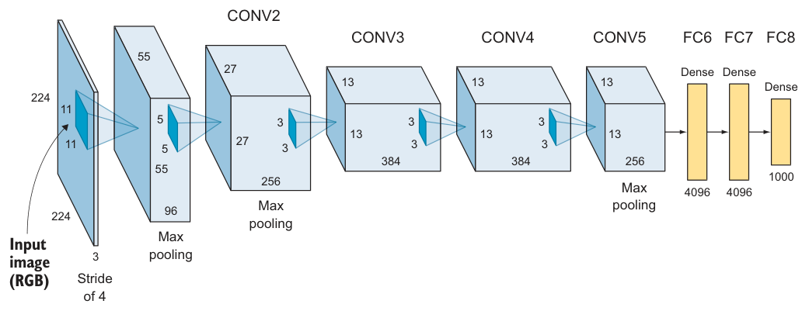
一份成熟架构就是一张现成的"超参数清单"，抄下来就能开跑：
| 超参数 | AlexNet 的取值 |
|---|---|
| 网络深度（层数） | 5 卷积层 + 3 全连接层 |
| 各卷积层深度（filter 数） | CONV1=96, CONV2=256, CONV3=384, CONV4=384, CONV5=256 |
| filter 尺寸 | 11×11, 5×5, 3×3, 3×3, 3×3 |
| 隐藏层激活 | ReLU（CONV1 到 FC7） |
| 池化 | CONV1、CONV2、CONV5 后各一个 Max pooling |
| FC6 / FC7 | 各 4,096 个神经元 |
| 输出层 FC8 | 1,000 个神经元 + softmax |
原书笔误
原书超参清单里写 "CONV4 = 385"，对照图 4.1 及 AlexNet 原论文应为 384。
原书 NOTE
第 5 章会系统讲主流 CNN 架构及 Keras 实现：LeNet、AlexNet、VGG、ResNet、Inception——帮你建立"什么问题配什么架构"的直觉，甚至启发你发明自己的架构。
4.3 让数据ready：训练前的数据准备#
指标和基线都有了，轮到数据。真实世界的数据是脏的，不能直接喂给网络。注意：这个过程因问题和数据而异，本节讲的是最基础的"数据按摩"手法，并帮你建立"什么样的数据算 ready"的直觉。
4.3.1 train / validation / test 划分#
训练 ML 模型要先把数据切成 Training（训练集）和 Testing（测试集）（图 4.2）：训练集用来训练模型、更新权重；测试集模型从未见过，用来评估泛化性能。
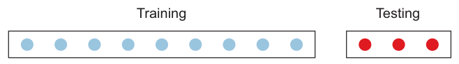
黄金法则：绝不使用测试数据参与训练。训练时绝不能把测试样本给模型看，否则模型就是在作弊。给模型看训练样本学特征，再在从未见过的数据上测泛化，才能得到无偏的性能评估。
侧栏：validation 数据集是干什么的
训练过程中，每个 epoch 结束后都要评估模型的 accuracy 和 error，用于观察和调参。用测试集做这件事就违反了黄金法则——测试集只在训练完成之后评估最终性能。所以需要额外切一份 Validation（验证集）：训练期间用它评估与调参（图 4.3），训练完用测试集做终考。
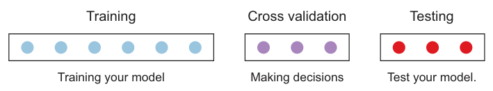
训练循环的伪代码长这样：
for each epoch:
for each training data instance: # 训练阶段
propagate error through the network
adjust the weights
calculate the accuracy and error over training data
for each validation data instance: # 验证阶段：只算指标，不更新权重
calculate the accuracy and error over the validation data
每个 epoch 跑完会输出 train_loss, train_acc, val_loss, val_acc 四个数（图 4.4 的 verbose 示例：loss: 1.6192 - acc: 0.4140 - val_loss: 1.3582 - val_acc: 0.5166），第 4.4 节就用它们诊断过拟合/欠拟合。
**切多大比例？**传统经验：
| 数据规模 | 推荐划分 |
|---|---|
| 小数据集（过去的常态，几万样本） | 80/20 或 70/30（train/test）；加验证集则 60/20/20 或 70/15/15 |
| 大数据集（如今动辄百万级） | 验证、测试各 1% 就够——100 万样本各留 1 万，没必要扣着几十万不用 |
逻辑很直白：评估集只要统计上够可靠就行，剩下的数据拿来训练更划算。
4.3.2 数据预处理#
好消息：神经网络需要的预处理极少——数据够多时它能直接从原始数据学特征（这是相对传统 ML 的大优势）。坏消息：为了性能或绕开网络限制，下面几招仍然常用：灰度化、缩放、归一化、数据增强。
侧栏：确保 train/val/test 来自同一分布
切分数据时最重要的一件事：三个数据集必须来自同一分布（same distribution）。反例：做手机端的车型分类器，为了"数据越多越好"去网上爬了一堆高质量、专业构图的汽车图，测试集上成绩喜人——上线后在手机实拍图上一塌糊涂。因为模型在高清图上训练和调参，而生产环境是模糊、低分辨率的实拍图，分布变了。修复办法：把低质量图像加进训练与验证集，让三个集合同分布。
灰度化：第 3 章讲过彩色图是三个矩阵、灰度图一个，颜色带来额外计算量。如果问题不需要颜色，可以全转灰度省算力。经验法则就是人类水平规则：你肉眼能从灰度图里认出目标，网络大概率也能。
缩放（Image Resizing）：神经网络要求所有图像同尺寸。MLP 输入层节点数必须等于像素数；CNN 也要在第一层指定输入形状，例如 Keras：
model.add(Conv2D(filters=16, kernel_size=2, padding='same',
activation='relu', input_shape=(32, 32, 3))) # 首层必须声明图像形状
数据集里同时有 32×32、28×28、64×64 的图，就必须先统一 resize。
归一化（Data Normalization）：把数据重新缩放，让每个输入特征（图像场景下就是像素）具有相近的数值分布。原图像素范围参差——一张 0~255，另一张 20~200。推荐归一化到 0~1（或其他统一小范围），能加速学习、让网络更快收敛。对网络友好的数据有两个特征：
- 数值小：大多数值落在 [0, 1] 附近；
- 同质：所有像素在同一范围内。
具体做法是减去均值、除以标准差，归一化后的分布是以 0 为中心的近高斯形状（图 4.5）：
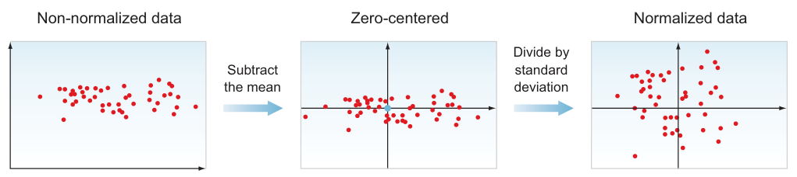
为什么值得做？看梯度下降的路径（图 4.6）：未归一化时，代价函数是一个被压扁拉长的碗，GD 在窄方向上反复振荡、沿"之"字路线磨到最小值；归一化后碗变得对称圆润，GD 直奔最小值，收敛快得多。
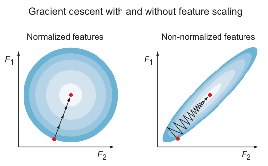
原书 TIP：为什么未归一化时 GD 会振荡？
各特征的取值范围不同 → 同一个学习率在各个维度上造成的修正量不成比例 → GD 被迫振荡着走向最小值，下山路径变长。归一化消除了量纲差异，一步顶一步。
原书 TIP：训练集和测试集必须用同一组 mean/std
两个数据集要经历完全相同的变换——用训练集的均值和标准差去归一化训练集、验证集和测试集。4.10 项目里就是这个写法。
拓展：为什么归一化必须用训练集的统计量
test/val 集在"模拟未来没见过的数据"，而未来数据的统计量你根本拿不到；如果用全量或测试集的 mean/std，等于把测试集的信息提前泄露进训练流程（data leakage，数据泄漏），评估会偏乐观。工程上的铁律：统计量只在训练集上算，再套用到所有划分。第 6 章迁移学习里"用预训练模型的 mean/std"是同一原则——统计量来自定义分布的那一方。
数据增强：本节先记住它是工具箱里的另一件预处理武器，细节在 4.8.3 正则化处展开。
4.4 评估模型并解读性能#
基线搭好、数据备好、模型训完——现在要判断：有没有瓶颈？哪个组件拖后腿？差性能来自过拟合、欠拟合，还是数据本身有缺陷？
神经网络常被批评是"黑盒"：工作得很好，却说不清为什么。可解释性研究正在快速发展；本节先教你最实用的一手——诊断网络行为。
4.4.1 诊断过拟合与欠拟合#
ML 性能差的主因就两个：Underfitting（欠拟合）与Overfitting（过拟合）。
- 欠拟合 = 模型太简单：学不动训练数据，训练集上就表现差。例：用一个单感知器去分开图 4.7 的叉和圈——一条直线怎么画都分不开。
- 过拟合 = 模型对当前问题太复杂：不去学泛化特征，而是背下了训练数据（memorize）。训练集上表现极好，遇到没见过的新数据就崩（图 4.8：决策边界把每个训练点都精确圈住）。
- 我们想要"刚刚好"（图 4.9）：模型漏分了一个 O 形样本，但这种边界明显更能泛化到新数据。
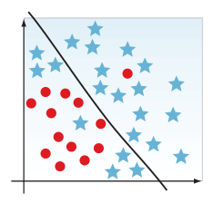 |
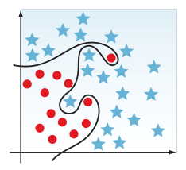 |
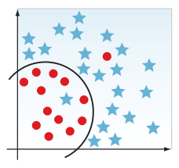 |
图 4.7 欠拟合：直线分不开 · 图 4.8 过拟合：每个点都被精确记住 · 图 4.9 刚刚好：能泛化（截自原书）
原书 TIP：学生备考比喻
欠拟合 = 学生没怎么复习，考试不及格。过拟合 = 学生背下了整本书：考书上的原题全对，题目一出书就傻眼——没有泛化。理想学生：把书学透，考"与书相关的新题"也能答好。
诊断靠两个数：训练误差与验证误差。
| 观察到的现象 | 诊断 | 处理方向 |
|---|---|---|
| train_error = 1%，val_error = 10% | 过拟合：背下了训练集 | 调超参抑制过拟合，迭代训练-测试-评估 |
| train_error = 14%，val_error = 15% | 欠拟合：太简单，学不动 | 加隐藏层 / 训练更久 / 换架构 |
侧栏：用人类水平表现估计 Bayes error
"表现不错"是多不错？需要一个现实的基准来对比。理论上模型能达到的最低错误率叫 Bayes Error Rate（贝叶斯错误率），它不可知，但人类在视觉任务上很强，可以拿 Human-Level Performance（人类水平）当它的代理： - 猫狗分类这种简单任务：人类错误率约 0.5%。你的模型 95% accuracy（错误 5%）远高于 0.5% → 还差得远，可能在欠拟合。 - 给放射科医生看的医学影像分类：人类错误率约 5%。同样 95% 的模型其实已经做得很好。 这不是说要设人类为上限——DL 完全可以超越人类——而是说它是判断模型好坏的免费标尺。
4.4.2 画学习曲线#
与其盯着 verbose 数字比大小，不如把训练/验证误差随 epoch 的变化画成Learning Curve（学习曲线）（图 4.10）。三种形态对应三种诊断：
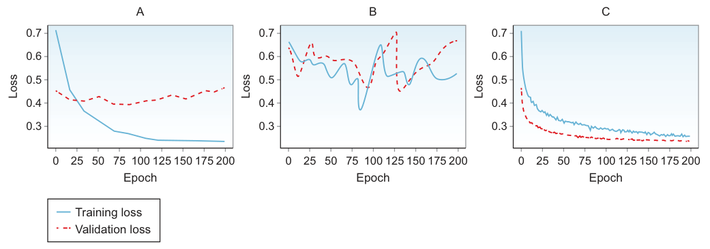
- 形态 A（过拟合）：训练 loss 持续下降（网络确实在学习），验证 loss 先降一点然后趋平甚至回升。网络学得"太用力"，把训练集背下来了。此时不需要加隐藏单元、不需要更复杂的模型——恰恰相反，网络相对数据太复杂了。药方：收集更多数据，或上正则化（4.8）。
- 形态 B（欠拟合）：训练、验证 loss 都很差。网络根本没在学习，加数据没用（现有数据都没消化）。药方：造一个更复杂的模型。
- 形态 C（刚刚好）：训练、验证 loss 都健康下降并贴合。这种状态的网络大概率能在测试集和真实场景表现良好。
把"看到什么 → 得什么病 → 开什么药"固化成决策流程——本章最值得收藏的一张图：
flowchart TD
A["训练完成，看学习曲线"] --> B{"train 表现如何？"}
B -- "差（train_error 高）" --> C["欠拟合 Underfitting"]
C --> C1["加深/加宽网络（提容量）"]
C --> C2["训练更久、换架构、调 lr"]
C --> C3["别急着收数据——现有数据都没学会"]
B -- "好但 val 明显差" --> D["过拟合 Overfitting"]
D --> D1["收集更多数据"]
D --> D2["正则化：L2 / Dropout / 数据增强"]
D --> D3["别加单元、别加深——已经太复杂"]
B -- "都好且贴合" --> E["状态健康 → 上测试集"]| 曲线形态 | 诊断 | 药方（按优先级） |
|---|---|---|
| train 降、val 平/升 | 过拟合 | 更多数据；L2/Dropout/增强；降低复杂度 |
| train、val 都差 | 欠拟合 | 加大容量（深度/宽度）；训练更久；换架构 |
| train、val 同降且贴合 | 刚刚好 | 保持，进测试环节 |
4.4.3 练习：搭建、训练并评估一个网络#
正式调参前，跑一个完整的小实验串起全流程。步骤：造玩具数据 → 80/20 切分 → 建 MLP → 训练 → 评估 → 画曲线。
# ===== 书 4.4.3 节（Keras 原版 → PyTorch 等价实现）=====
from sklearn.datasets import make_blobs # scikit-learn 造样本数据的工具
import torch, torch.nn as nn
from torch.utils.data import DataLoader, TensorDataset
# 1-2. 造数据：1000 个样本、2 个特征、3 个类别（Keras 版还把 y 用 to_categorical 做了 one-hot）
X, y = make_blobs(n_samples=1000, centers=3, n_features=2,
cluster_std=2, random_state=2)
# 3-4. 切分 80/20（本例为简单起见不设验证集，用 test 集兼当验证）
n_train = 800
train_X = torch.tensor(X[:n_train], dtype=torch.float32)
test_X = torch.tensor(X[n_train:], dtype=torch.float32)
train_y = torch.tensor(y[:n_train]) # PyTorch 的 CrossEntropyLoss 直接吃类别标签
test_y = torch.tensor(y[n_train:]) # 不需要 one-hot（Keras 用 to_categorical(y) 那步免了）
train_loader = DataLoader(TensorDataset(train_X, train_y), batch_size=64, shuffle=True)
# 5. 模型：两层 MLP —— Dense(25, input_dim=2, relu) + Dense(3, softmax)，共 153 个参数
model = nn.Sequential(
nn.Linear(2, 25), nn.ReLU(), # 隐藏层：2 特征进、25 单元、ReLU
nn.Linear(25, 3), # 输出层：3 类；PyTorch 里softmax 并进损失函数
)
loss_fn = nn.CrossEntropyLoss() # = softmax + categorical_crossentropy 的合体
opt = torch.optim.Adam(model.parameters(), lr=1e-3)
# 6. 训练 1000 epochs（书：epochs=1000）
for epoch in range(1000):
model.train()
for xb, yb in train_loader:
opt.zero_grad()
loss = loss_fn(model(xb), yb)
loss.backward(); opt.step()
if (epoch + 1) % 250 == 0: # 对应书里 fit() 每 epoch 打印的 train/test 指标
model.eval()
with torch.no_grad():
tr = (model(train_X).argmax(1) == train_y).float().mean()
te = (model(test_X).argmax(1) == test_y ).float().mean()
print(f'epoch {epoch+1}: Train: {tr:.3f}, Test: {te:.3f}')
# >> 书的最终结果：Train: 0.825, Test: 0.819
书的 Keras 版 model.summary()（图 4.11）：Dense(25) 有 2×25+25=75 参数，Dense(3) 有 25×3+3=78 参数，共 153。把训练/测试 accuracy 曲线画出来（图 4.12）：
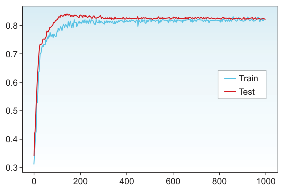
解读：两条曲线行为一致 → 没有过拟合（过拟合的样子是 train 好、test 差）。但可能欠拟合：这么简单的数据集只有 82% 属于差成绩。改进方向：上更复杂的网络 + 其他抗欠拟合手段。
4.5 改进网络与调超参数#
诊断完过拟合/欠拟合，接下来决定：时间花在调网络、清洗数据还是收集数据上？最怕闷头忙几个月，回头发现方向几乎不涨分。所以调参之前，先回答"要不要收集更多数据"。
4.5.1 收集更多数据 vs 调超参数#
新手第一反应永远是"堆数据"。但收集+标注数据不总是可行：成本可能很高，甚至未必有效。
原书 NOTE：标注是人工活（human in the loop）
写作时点，大部分标注靠人一张张看图打标签。更贵的是专业领域：标肺部 X 光查肿瘤，得雇有资质的医生——成本远高于雇人分猫狗。所以"多收数据"对某些 accuracy 问题确实是好方案，也能增强鲁棒性，但不总是可行。
原书作者做这个决策的流程（照做即可）：
flowchart TD
A["观察 train_acc 与 val_acc"] --> B{"训练集上表现可接受吗？"}
B -- "否（train 也差）" --> C["欠拟合：收数据没意义<br/>调超参 / 清洗训练数据"]
B -- "是，但 val/test 差很多" --> D["过拟合：收集更多数据可能有效"]
B -- "都好" --> E["达标，收工或冲更高目标"]原书 TIP
评估性能的目标是给问题定性归类：数据问题 → 花时间在预处理/收集数据；学习算法问题 → 花时间调网络。
4.5.2 参数 vs 超参数#
| Parameters（参数） | Hyperparameters（超参数） | |
|---|---|---|
| 谁来定 | 网络自己学出来、训练中自动更新 | ML 工程师训练前设定、之后人工调 |
| 具体是什么 | 权重 weights 与偏置 biases（反向传播自动优化到最小误差） | 学习率、batch size、epochs、隐藏层数…… |
| 控制什么 | 模型的预测函数本身 | 网络结构 + 训练方式 |
一句话：参数是网络在训练中"学会"的变量，我们不直接碰；超参数是我们设的旋钮，网络不会自己学。
4.5.3 神经网络超参数全景#
超参数没有万能数值（又是 No Free Lunch），好值取决于数据集与任务。想调得准，先理解每个旋钮往哪边拧会发生什么。原书把 NN 超参数分成三类（"旋钮面板"：学习率 0.0001~0.1、epochs 0~1000、隐藏单元 0~10000、mini-batch 1~1024）：
| 类别 | 成员 |
|---|---|
| 网络架构 | 隐藏层数（深度）、每层神经元数（宽度）、激活函数类型 |
| 学习与优化 | 学习率与 decay 调度、mini-batch 大小、优化算法、epochs（与早停） |
| 正则化 | L2、Dropout、数据增强 |
前两类在第 2、3 章见过，正则化是本章新内容。下面逐个讲"拧大/拧小各意味着什么"。
4.5.4 网络架构超参数#
深度与宽度：隐藏层数（depth）× 每层单元数（width）决定网络的学习能力（learning capacity）。目标是够用就好：太小欠拟合，太大过拟合。没有先验答案——先选个起点，跑起来看表现，再上下调。
数据集越复杂，需要的容量越大（图 4.13）：
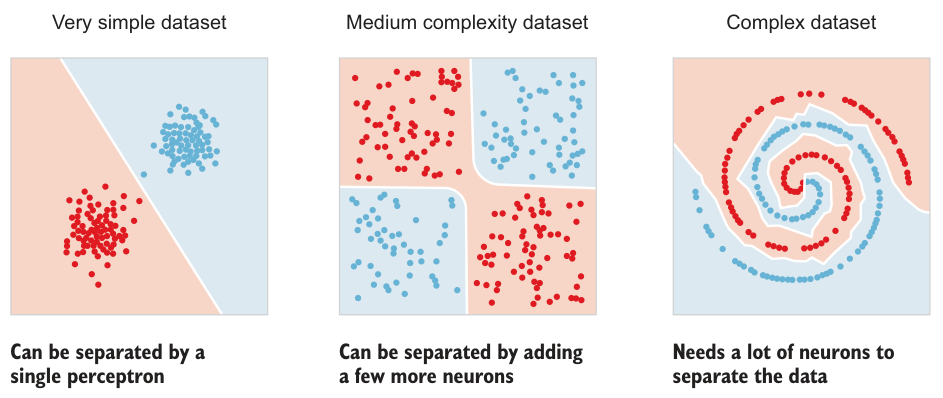
- 容量给太多 → 可能过拟合背题；过拟合了就减单元。
- 一般经验：加神经元，加到验证误差不再改善为止。
- 代价是算力：深网络训练贵。单元太少欠拟合；单元偏多通常不致命——前提是配正则化（Dropout 等，本章后面讲）。
- 推荐去 TensorFlow Playground（playground.tensorflow.org）玩：加层、加单元、盯学习行为，直觉就是这么攒出来的。
激活函数：激活给神经元引入非线性——没有它，网络只是线性组合的堆叠，解不了任何非线性问题。这是活跃的研究方向，新激活函数层出不穷，但写作时点：隐藏层 ReLU 及其变体（如 Leaky ReLU）表现最好；输出层分类问题用 softmax，单元数 = 类别数。
侧栏：层数与参数量——从算力角度想问题
神经元越多 → 要优化的参数越多（第 3 章 model.summary() 看总参数数）。硬件（算力/内存）紧张时，降参数量的两个抓手：
① 减网络的深度与宽度（隐藏层和单元数）——直接减参数；
② 加 pooling 层，或调卷积层的 stride / padding 缩小特征图尺寸——间接减参数。
复杂网络 → 参数多 → 算力内存需求高，trade-off 在真实项目里天天要权衡。建基线最好的办法仍是：看主流架构怎么解同类问题，从它出发，评估 → 调参 → 重复。
4.6 学习与优化#
架构定了，接下来是决定网络怎么学的超参数。
4.6.1 学习率与 decay 调度#
"学习率是最重要的单个超参数。如果只来得及优化一个超参数，那就是它。" ——Yoshua Bengio
复习 GD（第 2 章）：优化器在误差曲面上找让误差最小的权重，learning rate（lr）就是下山每一步的步长——它决定优化器下山的快慢。把代价函数画成一个权重轴上的 U 形曲线（图 4.14，最简化的情况），权重从随机初始点出发：
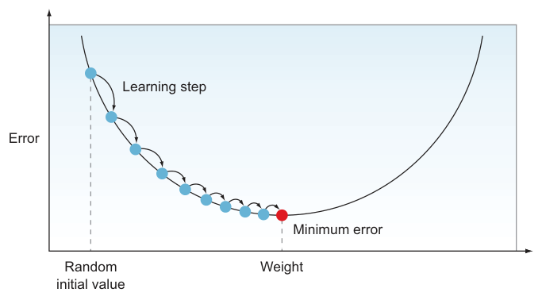
按 lr 的大小分四种情况（图 4.15~4.18）：
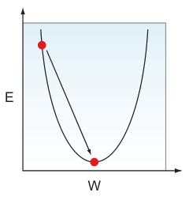
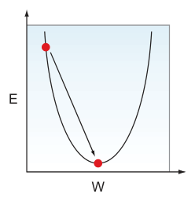 |
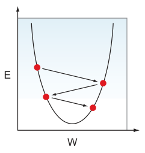 |
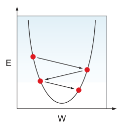 |
图 4.16 lr 偏小：碎步慢慢蹭到谷底 · 图 4.17 lr 偏大：越过最优值来回震荡 · 图 4.18 lr 太大（理想值两倍以上）：越跳越远，发散（截自原书）
- lr 略小于理想值：碎步下行，最终能到最优，只是慢。
- lr 大于理想值：第一步就冲过头（overshoot）越过最优点，再从对面冲回来；可能收敛到一个"还不错"但不是最低的误差。
- lr 远大于理想值（两倍以上）：不仅冲过头，还越跳越远——这叫 Divergence（发散）。
太高 vs 太低的权衡（原书 TIP 展开成表）：
| lr | 收敛速度 | 风险 |
|---|---|---|
| 太低 | 极慢（理论上无限时间必收敛） | 训练成本不可接受 |
| 太高 | 前期下得快 | 振荡、跳过最小值甚至发散 |
| 刚好 | 直奔最小值 | —— |
4.6.2 系统地找最优学习率#
最优 lr 取决于损失曲面的拓扑，而后者取决于模型架构与数据集——所以没有放之四海的数。实践起点：用框架优化器的默认值（各家文档可查，如 Keras/PyTorch 的 Adam 默认 lr=0.001），训练不顺再在"惯嫌犯"序列里试：0.1, 0.01, 0.001, 0.0001, 0.00001, 0.000001。
调试的观察对象是 verbose 里的 val_loss：
| val_loss 的表现 | 诊断 | 药方 |
|---|---|---|
| 每步都在降 | 正常 | 继续训到不再改善 |
| 训练跑完了还在降（没收敛） | lr 太小 | 同 lr 加 epochs 再训；或把 lr 调大一档再训 |
| 开始上升或上下振荡 | lr 太大 | 减小 lr |
把 lr 与 loss 曲线的对应关系画出来，四种形态一目了然（原书未编号插图，转成表）：
| lr | loss 曲线形态 |
|---|---|
| much smaller（太小） | 一直降，但要很久很久才收敛 |
| larger（偏大） | 比起点好，但离最优还远 |
| much larger（太大） | 先降后升——权重离最优点越来越远 |
| good（刚好） | 稳定下降直到最低点 |
4.6.3 学习率衰减与自适应学习率#
手动调 lr 是迭代活：设一个静态值 → 等训练完 → 评估 → 再调。更聪明的做法是 Learning Rate Decay（学习率衰减）：让 lr 在训练过程中自动变化，往往比静态值表现更好，且大幅缩短拿到好结果的时间。
思路：小 lr 更可能到达低误差点但太耗时——那就先大后小：训练初期用大 lr 大步逼近最小值，之后每过 n 个 epoch 把 lr 减一档，避免在谷底来回打水漂。
- Linear Decay（线性衰减）：例如每 5 个 epoch 减半（图 4.19）。
- Exponential Decay（指数衰减）：例如每 8 个 epoch 乘 0.1（图 4.20）——收敛明显更慢，但最终会到。
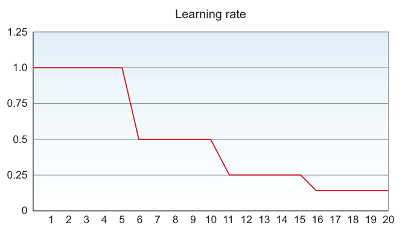 |
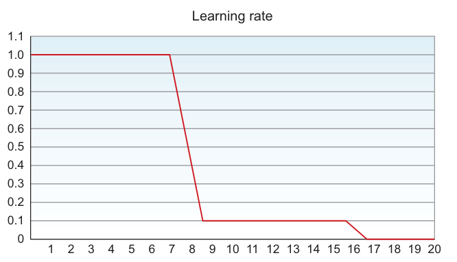 |
图 4.19 线性衰减：每 5 个 epoch 减半 · 图 4.20 指数衰减：每 8 个 epoch ×0.1（截自原书）
再进一步是 Adaptive Learning（自适应学习率）：用启发式规则自动更新 lr——该降时降，改进太慢时还会升。自适应策略通常优于其他设定方式；Adam 与 Adagrad 就是代表（4.7.2 展开）。
4.6.4 Mini-batch 大小#
batch_size 对训练的资源需求与速度影响巨大。复习第 2 章的三种梯度下降（图 4.21、4.22）：
| 类型 | 每次更新用多少数据 | 噪声 | 优点 | 缺点 |
|---|---|---|---|---|
| Batch GD（BGD） | 整个训练集（每 epoch 只更新一次） | 低，路径平滑 | 步子大且稳 | 大数据下每步都太久；内存吃不消 |
| Stochastic GD（SGD） | 单个样本（又称 online learning） | 高，振荡着走向最小值 | 进步快，常能非常接近全局最小；调小 lr 可降噪 | 逐样本计算，吃不到矩阵乘法的提速红利 |
| Mini-batch GD（MB-GD） | 一批（几十到几百） | 中 | 矩阵乘法提速 + 不用等全数据集 | 要选批大小 |
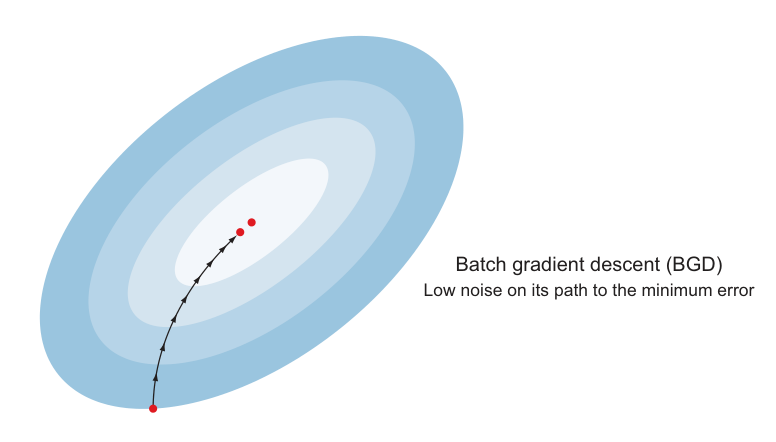
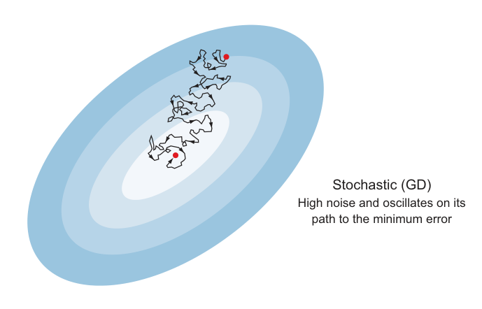
两个极端：batch=1 就是 SGD（每样本都更新，丢了矩阵提速）；batch=全集就是 BGD（大数据下一步等太久）。中间就是 MB-GD。
**选多大的批？**原书指南：
- 小数据集（< 2,000 样本）：直接用 BGD，全量训练很快。
- 大数据集：从 64 或 128 起步，在 32 → 64 → 128 → 256 → 512 → 1024 这条刻度上翻倍调试。
- 铁律：batch 必须装得进 CPU/GPU 内存。1024 以上可行但少见；大批吃到矩阵乘法加速，代价是更多内存与算力。
- batch、算力与 epochs 的关系（原书未编号插图）：批越大 → 每 epoch 的算力开销越大 → 找到好的 w,b 所需 epochs 越少。SGD 每步便宜但要跑很多步；BGD 反之。
4.7 优化算法#
DL 历史上提出过大量优化算法，多数后来被证明泛化不了到各种网络。社区最终沉淀下来的共识：GD 及其少数变体够用。本节讲两个公认出色、跨架构稳定的：Momentum 与 Adam。（更多算法读 Sebastian Ruder 的综述 An overview of gradient descent optimization algorithms，arxiv.org/pdf/1609.04747.pdf。）
4.7.1 带动量的梯度下降#
SGD 的老毛病：垂直方向的振荡（图 4.23）拖慢收敛，还让人不敢用大 lr（怕冲过头发散）。
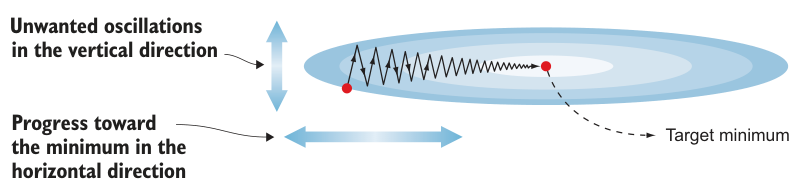
Momentum（动量）的解法：沿相关方向加速、在无关方向上软化振荡——垂直方向的学习变慢，水平方向的进展变快，更快到达目标最小值。直觉就是经典物理的动量：雪球滚下山，越滚越快；梯度方向一致的维度上动量累加，方向反复变化的维度上更新被抵消削弱。
侧栏：momentum 的数学
在权重更新式里加一个速度项（velocity term）：
其中 velocity term = 过去梯度的加权平均。方向一致的梯度互相增强，来回变的梯度互相抵消——收敛更快、振荡更少。
4.7.2 Adam#
Adam = Adaptive Moment Estimation（自适应矩估计）。它像 momentum 一样保留过去梯度的指数衰减平均；如果说 momentum 是"滚下斜坡的球"，Adam 就是带摩擦的重球——动量被摩擦力拖住、可控。Adam 通常快于其他优化器，是训练复杂网络的安全牌。
新超参数怎么办？好消息：主流框架的默认值基本不用动，只有 lr 必须自己调（lr 不是 Adam 专属超参）。Keras 的签名与作者推荐的默认值：
| 超参数 | 推荐值 | 作用 |
|---|---|---|
| lr | 必须调 | 学习率 |
| β1（momentum 项） | 0.9 | 一阶矩（梯度均值）的衰减率 |
| β2（RMSprop 项） | 0.999 | 二阶矩（梯度方差）的衰减率 |
| ε | 10⁻⁸ | 防除零的小数 |
PyTorch 等价：torch.optim.Adam(model.parameters(), lr=0.001, betas=(0.9, 0.999), eps=1e-8)——默认值即上述推荐值。
4.7.3 epochs 数量与早停准则#
Epoch（轮次）= 模型完整看一遍训练数据。epochs 越多学得越足，但训过头就开始过拟合。盯什么？还是 train 与 val 两组误差。原书走了一遍真实场景：
前 3 个 epoch（图 4.24）：train 与 val 误差都在降 → 网络仍在学习，此时停训练毫无道理，让它继续。
Epoch 1, Training Error: 5.4353, Validation Error: 5.6394
Epoch 2, Training Error: 5.1364, Validation Error: 5.2216
Epoch 3, Training Error: 4.7343, Validation Error: 4.8337
再训 6 个 epoch（图 4.25）：train_error 还在改善（好事），但第 8 个 epoch 起 val_error 开始振荡上升——train 在涨分、val 在退步 = 开始过拟合：
Epoch 6, Training Error: 3.7312, Validation Error: 3.8324
Epoch 7, Training Error: 3.5324, Validation Error: 3.7215
Epoch 8, Training Error: 3.7343, Validation Error: 3.8337 <-- val 开始恶化
画成曲线（图 4.26）："just right" 停在两条曲线分叉之前。
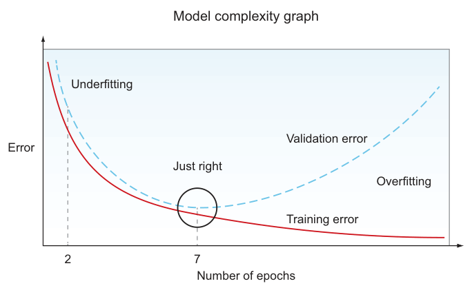
4.7.4 早停#
Early Stopping（早停）：监控验证误差，在它开始变大之前自动停训。Keras 写法与参数：
| 参数 | 含义 | 怎么设 |
|---|---|---|
monitor |
监控哪个指标 | 通常 val_loss——它是模型性能的"内部模考"，验证集好，测试/生产大概率也好 |
min_delta |
算"改善"的最小变化量 | 无标准值：先跑几个 epoch 看误差变化速率再定；默认 0 在多数情况就很好 |
patience |
指标不改善时再等几个 epoch 才停 | 设 1 太激进——误差小幅振荡后继续改善很常见；等 10~20 个 epoch 再判死刑 |
原书 TIP
早停的最大好处：你不用再操心 epochs 该设多少——设一个很大的数，让停训机制自己决定何时收手。
拓展：早停为什么算正则化
正则化的定义是"抑制过拟合、提升泛化的手段"。早停把权重停在了验证误差最低的时刻——那之后的训练只是在背训练集、把权重推向过拟合区域。它等效于给"训练时长"这个自由度加了约束：容量大 + 训练短 = 有效模型复杂度被压低。与 L2/Dropout 不同，它零成本、不改变网络结构，是"免费的正则化"，实践中几乎总是开着。
4.8 防过拟合的正则化技术#
网络过拟合 → 说明它太复杂 → 第一招是Regularization（正则化）：给它"做减法"。本节三个最常用的技术：L2、Dropout、数据增强。
4.8.1 L2 正则化#
基本思想：在误差函数里加一个正则化项，把隐藏单元的权重压小、压到接近零——网络因此被"简化"：
（误差函数用第 2 章讲过的任意一个都行：MSE 或交叉熵。）L2 的正则化项：
其中 λ 是正则化系数（超参数），m 是样本数，w 是权重。合起来的新误差函数：
**为什么能抑制过拟合？**看反向传播的权重更新式：
加了正则项后误差变大 → 导数也变大 → 同样的 lr 减掉更多 → \(W_{\text{new}}\) 更小。极端情形：正则项 ×lr = \(W_{\text{old}}\) 时，新权重直接归零，这个神经元的贡献被取消——网络变得更简单。实际中 L2 不会把权重精确压到 0，只是压小、削弱其影响；权重可忽略的单元几乎不贡献学习，网络等效简化，过拟合随之减轻。因为逼着权重衰减向零，L2 又叫 Weight Decay（权重衰减）。
Keras 写法（给隐藏层加 kernel_regularizer 参数）：
λ 是可调超参；库默认值通常够用，仍见过拟合迹象就调大 λ进一步压复杂度。
4.8.2 Dropout 层#
Dropout（随机失活）：每次训练迭代中，每个神经元以概率 p 被临时忽略（本迭代不参与，下次迭代可能复活）。故意暂停一部分神经元的学习听起来反直觉，但效果好得惊人。p 叫 Dropout Rate（失活率），典型范围 0.3~0.5：从 0.3 起步，见过拟合就加。
原书 TIP：团队掷硬币比喻
每天早上掷硬币决定谁来做那件关键任务。几轮下来，所有队员都学会了这件事，没人能躺赢、也没人掉链子——团队对变化的抗性大幅增强。网络同理：没有哪个神经元能当独苗，特征学习被摊到所有单元上。
L2 vs Dropout：目标相同——削弱神经元、降复杂度。差别在手段：
| L2 | Dropout | |
|---|---|---|
| 做法 | 把权重调小，削弱单元影响 | 每次迭代整体取消一部分单元 |
| 效果 | 权重衰减向零（不等于零） | 被选中的单元本迭代完全失声 |
两者可以（也推荐）同时使用，都让网络更稳健、更具韧性。
4.8.3 数据增强#
抗过拟合的根本办法之一是更多数据；拿不到真数据，就自己造：对现有图像做变换生成新实例，是给学习算法添训练数据的廉价途径。
常见变换：翻转（flipping）、旋转（rotation）、缩放（scaling）、变焦（zooming）、光照变化等。图 4.27 对数字"6"做增强，一张图变出 20 张新图：
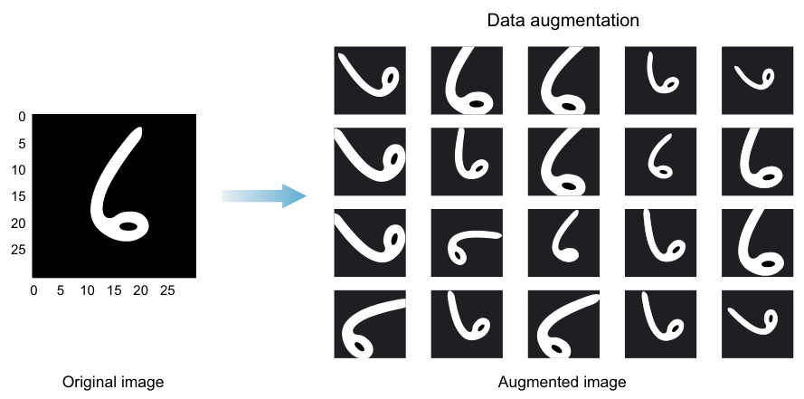
增强的实质：告诉算法"翻转、旋转之后的 6 依然是 6"——模型对任何形态的 6 都更鲁棒。它算正则化，因为让网络见过物体的各种变体后，特征学习对"原始形态"的依赖降低了，新数据上更有韧性。
Keras 写法：
from keras.preprocessing.image import ImageDataGenerator # 导入增强器
datagen = ImageDataGenerator(horizontal_flip=True, vertical_flip=True) # 变换类型当参数传
datagen.fit(training_set) # 在训练集上拟合增强器
4.9 批归一化#
4.3 节给输入层做了归一化，训练提速。问题来了：隐藏层提取的特征（activation 值）本质上是下一层的输入，它们一直在变——既然输入层吃归一化的甜头，为什么不把每个隐藏层的值也归一化（图 4.28）？这就是 Batch Normalization（BN，批归一化）：训练提速更多、网络更韧。
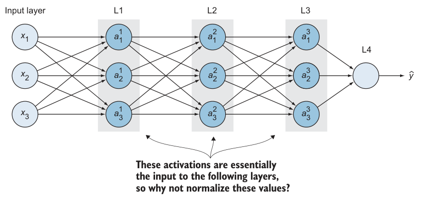
4.9.1 covariate shift 问题#
先看 BN 要解决的问题。假设训了个猫分类器，训练集里全是白猫；测试集里出现各色猫，模型表现骤降——因为它学的分布（白猫）在测试时变了（图 4.29）。
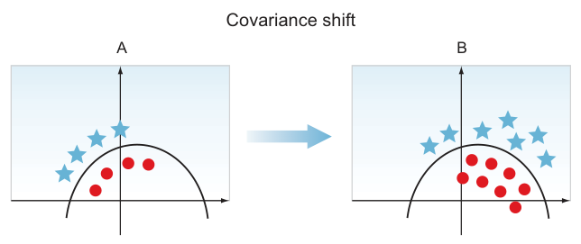
原书定义：模型学的是映射 X→y，如果 X 的分布发生了变化，就叫 Covariate Shift（协变量偏移）——此时往往需要重新训练模型。
4.9.2 神经网络内部的 covariate shift#
BN 解决的其实是网络内部的同款问题。看图 4.30 的四层 MLP，站到第三层 L3 的视角：
- L3 的输入是 L2 的激活值 \((a_1^2, a_2^2, a_3^2, a_4^2)\)——前层提取的特征；
- L3 的任务是把这些输入映射到 \(\hat y\)、逼近标签 y；
- 但训练中前面各层的参数 (w, b) 一直在被更新 → L2 的激活值一直在变 → 站在 L3 看，自己的输入分布漂移不停 = 网络内部患上了 covariate shift。
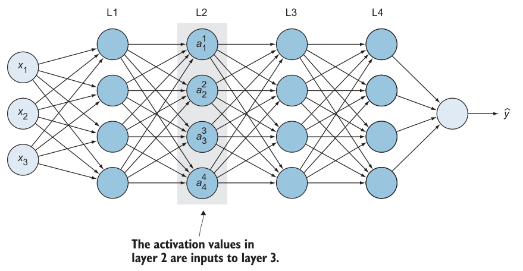
BN 的作用：压缩隐藏层取值分布的漂移程度，让后面的层站在更稳的地基上学习。
原书 NOTE（精确理解 BN）
BN 不能取消、也不减少隐藏单元取值的变化本身——它保证的是变化的分布保持稳定：具体的值可以变，但均值和方差不变。
4.9.3 BN 的数学#
BN 出自 Ioffe 与 Szegedy 2015 年论文 Batch Normalization: Accelerating Deep Network Training by Reducing Internal Covariate Shift（arxiv.org/abs/1502.03167）。它在每层激活函数之前插入一个操作，做三步：
① 零中心化——算当前 mini-batch 的均值与方差（"batch"归一化名字的由来）：
② 归一化（ε 是防除零的小数，典型 10⁻⁵）：
③ 缩放与平移——乘 γ 再加 β：
（原书此式写作 \(y_i \leftarrow \gamma X_i + \beta\)，按上下文应为归一化后的 \(\hat{x}_i\)。）
关键设计：γ 和 β 是网络的新增可学习参数——优化算法像更新权重偏置一样更新它们。直觉：纯归一化会把每层强制成标准正态，太死板；γ/β 让网络自己学每层最优的缩放和均值。副作用是训练初期 GD 还在搜索合适的 γ/β 时偏慢，找到合理值后明显加速。
4.9.4 Keras 实现（与 PyTorch 的差异）#
原理要懂，但用 BN 不用自己写公式——各框架都是一行代码。Keras 的用法：在隐藏层之后加一层 BN，把它的输出归一化再喂给下一层：
from keras.models import Sequential
from keras.layers import Dense, Dropout
from keras.layers.normalization import BatchNormalization
model = Sequential()
model.add(Dense(hidden_units, activation='relu')) # 第一个隐藏层
model.add(BatchNormalization()) # BN 归一化上一层的输出
model.add(Dropout(0.5)) # 原书建议：Dropout 放 BN 之后，
# 让随机关闭的节点不跳过归一化
model.add(Dense(units, activation='relu')) # 第二个隐藏层
model.add(BatchNormalization())
model.add(Dense(2, activation='softmax')) # 输出层
PyTorch 等价（结构一致；注意 PyTorch 里全连接层配 BatchNorm1d、卷积层配 BatchNorm2d）：
import torch.nn as nn
model = nn.Sequential(
nn.Linear(hidden_units, hidden_units), nn.ReLU(), # Keras 把激活写进 Dense；PyTorch 拆开写
nn.BatchNorm1d(hidden_units),
nn.Dropout(0.5), # 同原书：BN 后接 Dropout
nn.Linear(hidden_units, units), nn.ReLU(),
nn.BatchNorm1d(units),
nn.Linear(units, 2) # CrossEntropyLoss 内含 softmax
)
拓展：BN 在训练期与推理期的行为差异
训练时：μ、σ 用当前 mini-batch 的统计量算（batch 小则噪声大），同时用滑动平均悄悄维护一份全局运行统计量 running_mean / running_var。推理时：不再按批计算——样本可能一次只来一条，按批算毫无意义——直接使用训练期间积累的运行统计量。这带来两个工程后果：① PyTorch 里忘写 model.eval()，BN 会继续用当前批统计量，精度莫名下降是经典事故；② batch 极小（如 1）时 BN 训练统计量失真，这也是 GroupNorm 等变体存在的理由。另外注意 momentum 语义反转：Keras BatchNormalization(momentum=0.99) 里 momentum 是旧值权重；PyTorch BatchNorm2d(momentum=0.1) 里 momentum 是新值权重——PyTorch 的 momentum = 1 − Keras 的 momentum。
拓展：BN 放在激活前还是激活后
原书 4.9.3 说"BN 加在每层激活函数之前"，但其代码与 4.10 项目实际写的都是 Conv → ReLU → BN（激活之后）。两种流派都存在：原始论文放激活前；实践中"卷积→BN→激活"与"卷积→激活→BN"都能工作，同一网络里保持统一即可，别当成对错题。
4.9.5 BN 小结#
值得带走的直觉：BN 把归一化从输入层推广到所有隐藏层，削弱了前后层学习过程的耦合，让每层更独立地学习。站在后面的层看：前面的层被约束在同均值同方差的分布上，漂移幅度小得多，学习任务因此变简单。机制上：隐藏单元被迫保持由 γ、β 两个显式可学习参数控制的标准化分布——学习算法在训练中自动设定它们。
4.10 项目：在 CIFAR-10 上冲高准确率#
第 3 章的 CIFAR-10 项目只有约 65% accuracy；本章把学到的技术全用上，冲到约 90%。流程：
- 导依赖
- 备数据：下载 → 切 train/val/test → 归一化 → one-hot
- 建架构：更深网络 + Dropout + L2 + BN
- 训练
- 评估
- 画学习曲线
数据准备（书 STEP 1-2）#
CIFAR-10：50,000 张 32×32 彩色训练图 + 10,000 张测试图，10 个类别（Keras 还内置 CIFAR-100、MNIST、Fashion-MNIST 等）。把训练集再切出 5,000 做验证：
# ===== 书 4.10 节 STEP 1-2（Keras 原版）=====
from keras.datasets import cifar10
(x_train, y_train), (x_test, y_test) = cifar10.load_data() # 下载并载入（已切好 train/test）
x_train = x_train.astype('float32') # 转浮点
x_test = x_test.astype('float32')
(x_train, x_valid) = x_train[5000:], x_train[:5000] # 前 5000 当验证集
(y_train, y_valid) = y_train[5000:], y_train[:5000]
# x_train=(45000,32,32,3) x_valid=(5000,32,32,3) x_test=(10000,32,32,3)
原书笔误
原书打印输出写 x_test = (1000, 32, 32, 3)，应为 (10000, 32, 32, 3)——正文自己写明测试集是 10,000 张。
归一化：用训练集的 mean/std（呼应 4.3.2 的 TIP；1e-7 防除零）：
mean = np.mean(x_train, axis=(0,1,2,3)) # 在训练集上算统计量
std = np.std(x_train, axis=(0,1,2,3))
x_train = (x_train - mean) / (std + 1e-7) # 三个集合套用同一组 mean/std
x_valid = (x_valid - mean) / (std + 1e-7)
x_test = (x_test - mean) / (std + 1e-7)
one-hot 编码标签（Keras 用 np_utils.to_categorical）。
数据增强：选哪些变换不靠拍脑袋——去看网络分错/识别差的图，找规律提假设，实验验证再重复。比如错样多是旋转过的物体，就加旋转增强。本项目用了旋转 + 水平/垂直平移 + 水平翻转：
datagen = ImageDataGenerator(
rotation_range=15, # 随机旋转 ±15°
width_shift_range=0.1, # 水平平移 ±10%
height_shift_range=0.1, # 垂直平移 ±10%
horizontal_flip=True, # 水平翻转
vertical_flip=False) # 垂直翻转：关闭
datagen.fit(x_train)
架构（书 STEP 3）#
第 3 章是 AlexNet 风格（3 CONV + 2 FC）；本项目加深到 6 CONV + 1 FC 换取更大学习容量，配置清单：
| 设计决策 | 取值 | 灵感来源 |
|---|---|---|
| 卷积核 / 池化窗 | 3×3 卷积、2×2 池化 | VGGNet（牛津 VGG，第 5 章详讲） |
| 池化位置 | 每两个卷积层后放一个（而非每层都放） | VGGNet |
| Dropout | 每隔两个卷积层放一个，p = 0.2 / 0.3 / 0.4 递增 | 4.8.2 |
| BatchNorm | 每个卷积层后加一层，归一化下一层的输入 | 4.9 |
| L2 | 所有卷积层加 kernel_regularizer=l2(λ) |
4.8.1 |
各层单元数：CONV1-2 = 32，CONV3-4 = 64（32×2），CONV5-6 = 128（32×4），weight_decay = 1e-4。PyTorch 完整实现（与书逐层对应）：
# ===== 书 4.10 节 STEP 3（PyTorch 等价实现）=====
import torch.nn as nn
class CifarNet(nn.Module):
def __init__(self, base=32):
super().__init__()
def conv_bn(cin, cout):
# Keras: Conv2D(cout, 3, padding='same', kernel_regularizer=l2(1e-4))
# -> Activation('relu') -> BatchNormalization()
return nn.Sequential(
nn.Conv2d(cin, cout, 3, padding=1), # padding='same'；L2 见下方 weight_decay
nn.ReLU(), # 所有隐藏层用 ReLU
nn.BatchNorm2d(cout), # 每个卷积层后加 BN
)
self.features = nn.Sequential(
conv_bn(3, base), conv_bn(base, base), # CONV1-2（32 通道）
nn.MaxPool2d(2), nn.Dropout(0.2), # POOL + Dropout p=0.2
conv_bn(base, base*2), conv_bn(base*2, base*2), # CONV3-4（64）
nn.MaxPool2d(2), nn.Dropout(0.3),
conv_bn(base*2, base*4), conv_bn(base*4, base*4), # CONV5-6（128）
nn.MaxPool2d(2), nn.Dropout(0.4),
)
self.classifier = nn.Sequential(
nn.Flatten(), # 特征图摊平成 1D（2048 维）
nn.Linear(base*4 * 4*4, 10), # Dense(10, softmax)；10 类
)
def forward(self, x):
return self.classifier(self.features(x))
model = CifarNet()
训练（书 STEP 4）与超参策略#
作者的超参决策过程比数字本身更有价值：
| 超参数 | 决策过程 |
|---|---|
| batch_size | 想快点训 → 从 64 起翻倍 → 试 256 时显存爆了（Resource exhausted: OOM）→ 退回 128。呼应 4.6.4：batch 必须装进内存 |
| epochs | 先训 50 发现还在改善 → 加到 125，达到 90%+；再训还能涨。呼应早停思想：加 epochs、盯 val 指标 |
| 优化器 | Adam（4.7.2），lr=0.0001，decay=1e-6 |
| 硬件 | GPU 训了约 3 小时；没 GPU 就减 epochs，或挂着过夜训 |
# ===== 书 4.10 节 STEP 4（Keras 原版）=====
batch_size, epochs = 128, 125
checkpointer = ModelCheckpoint(filepath='model.100epochs.hdf5', verbose=1,
save_best_only=True) # 只在 val_loss 改善时存权重
optimizer = keras.optimizers.adam(lr=0.0001, decay=1e-6)
model.compile(loss='categorical_crossentropy', optimizer=optimizer, metrics=['accuracy'])
history = model.fit_generator(datagen.flow(x_train, y_train, batch_size=batch_size),
callbacks=[checkpointer],
steps_per_epoch=x_train.shape[0] // batch_size,
epochs=epochs, verbose=2,
validation_data=(x_valid, y_valid))
PyTorch 等价（ModelCheckpoint(save_best_only=True) → 手动保存最优 val_loss 权重；增强由 transforms 在数据集侧完成）：
# ===== 书 4.10 节 STEP 1-2 增强部分（PyTorch 版，torchvision.transforms）=====
from torchvision import datasets, transforms
from torch.utils.data import DataLoader, random_split
train_tf = transforms.Compose([
transforms.RandomRotation(15), # rotation_range=15
transforms.RandomAffine(0, translate=(0.1, 0.1)), # width/height_shift_range=0.1
transforms.RandomHorizontalFlip(), # horizontal_flip=True
transforms.ToTensor(),
# 归一化统计量 = 训练集 mean/std（书用 np.mean/std 整体计算；torchvision 按通道给）
transforms.Normalize((0.4914, 0.4822, 0.4465), (0.2470, 0.2435, 0.2616)),
])
test_tf = transforms.Compose([transforms.ToTensor(),
transforms.Normalize((0.4914, 0.4822, 0.4465),
(0.2470, 0.2435, 0.2616))])
full_train = datasets.CIFAR10('./data', train=True, download=True, transform=train_tf)
test_set = datasets.CIFAR10('./data', train=False, download=True, transform=test_tf)
train_set, valid_set = random_split(full_train, [45000, 5000]) # 45k 训练 + 5k 验证
train_loader = DataLoader(train_set, batch_size=128, shuffle=True, num_workers=2)
valid_loader = DataLoader(valid_set, batch_size=256)
# 标签保持 0~9 整数即可：CrossEntropyLoss 内部处理（对应书的 one-hot + softmax 输出）
# ===== 书 4.10 节 STEP 4（PyTorch 训练循环）=====
import copy
loss_fn = nn.CrossEntropyLoss()
opt = torch.optim.Adam(model.parameters(), lr=1e-4,
weight_decay=1e-4) # Keras 的 l2(1e-4) 正则 -> weight_decay
best_loss, best_w = float('inf'), None
for epoch in range(125): # epochs=125
model.train()
for xb, yb in train_loader:
opt.zero_grad()
loss = loss_fn(model(xb), yb)
loss.backward(); opt.step()
model.eval(); vl, n = 0.0, 0 # 每个 epoch 后算 val_loss（对应 verbose 的 val_loss）
with torch.no_grad():
for xb, yb in valid_loader:
vl += loss_fn(model(xb), yb).item() * len(yb); n += len(yb)
vl /= n
if vl < best_loss: # save_best_only：只留验证误差最优的权重
best_loss, best_w = vl, copy.deepcopy(model.state_dict())
torch.save(best_w, 'model_best.pt') # 对应书存 model.100epochs.hdf5
评估与学习曲线（书 STEP 5-6）#
# ===== 书 4.10 节 STEP 5-6 =====
scores = model.evaluate(x_test, y_test, batch_size=128, verbose=1)
print('\nTest result: %.3f loss: %.3f' % (scores[1]*100, scores[0]))
# >> Test result: 90.260 loss: 0.398
pyplot.plot(history.history['acc'], label='train') # 画学习曲线诊断过/欠拟合
pyplot.plot(history.history['val_acc'], label='test')
pyplot.legend(); pyplot.show()
PyTorch 评估：
model.load_state_dict(torch.load('model_best.pt')); model.eval()
correct = total = 0
with torch.no_grad():
for xb, yb in DataLoader(test_set, batch_size=128):
correct += (model(xb).argmax(1) == yb).sum().item(); total += len(yb)
print(f'Test result: {correct/total*100:.3f}') # 期望 ≈ 90.260
最终：测试准确率 90.26%（起点约 65%）。学习曲线（图 4.33）里 train 与 val 贴合上升、未见分叉——训练还有余地。
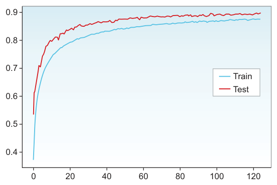
想再涨分？五个实验方向#
| 方向 | 具体做法 |
|---|---|
| 更多 epochs | 曲线到 123 epoch 还在改善 → 加到 150/200 |
| 更深的网络 | 加层提容量 |
| 更低的学习率 | 降 lr（记得同时加长训练） |
| 换 CNN 架构 | Inception / ResNet（第 5 章）：ResNet 训 200 epochs 可到 95% |
| 迁移学习 | 第 6 章：用预训练网络，几分之一的时间拿更高分 |
坑与陷阱#
8 个容易踩的坑
- 不平衡数据上 accuracy 是谎话：罕见病数据集上"永远输出阴性"就有 99.999% 准确率，但一个病人也抓不到。先看类别分布，再选指标。
- 测试集只能用一次：训练期看测试集 = 作弊；调参用验证集，终考才用测试集。
- train/val/test 必须同分布：高清网图训练 + 手机实拍部署，上线即翻车。把"未来的样子"混进训练集。
- 归一化只能用训练集的 mean/std：拿测试集统计量算归一化是数据泄漏，评估虚高。
- val_loss 振荡上行 = lr 太大：不是"再训训就好"，先降 lr；loss 先降后升是发散前兆。
- patience=1 的早停太神经质：误差小幅振荡后继续改善是常态，等 10~20 个 epoch 再停。
- PyTorch 里忘
model.eval()：BN 切回批统计量、Dropout 继续失活，推理精度莫名掉一截。 - 别把"堆数据"当万能药：先看 train 表现——train 都差是欠拟合，收数据没用，先提容量。
速览#
- accuracy 会失灵：类别不平衡时需要 precision / recall / F-score；选指标 = 回答"FP 和 FN 哪个代价大"。
- 混淆矩阵四格：TP/TN 预测对，FP（Type I）误报，FN（Type II）漏报；F1 = 2pr/(p+r)，调和平均重罚短板。
- 基线模型的最快路径：抄同类问题上已知最好的架构（AlexNet 例），甚至直接迁移学习（第 6 章）。
- 数据划分：小数据 60/20/20 或 70/15/15；大数据 val/test 各 1% 足够；三集必须同分布。
- 归一化 = 减均值除标准差，统计量只用训练集算；它让代价函数变对称、GD 直线收敛。
- 诊断看两条曲线：train 好 val 差 = 过拟合（多数据/正则化）；train 都差 = 欠拟合（提容量/训更久）；都贴合 = 健康。
- 参数是网络学出来的（权重/偏置），超参数是你设的旋钮；三大类：架构、学习与优化、正则化。
- 学习率是最重要的单个超参数（Bengio）；val_loss 上升/振荡 = 太大，训练完还在降 = 太小；可用线性/指数 decay 或 Adam 自适应。
- batch 从 64/128 起步翻倍调试，必须装进显存；Momentum = 加"过去梯度加权平均"的速度项，Adam = 带摩擦的重球，默认值 β1=0.9、β2=0.999、ε=10⁻⁸，只有 lr 必须调。
- L2（λ/2m·Σw²，权重衰减）与 Dropout（p≈0.3~0.5，随机失活）推荐一起用；数据增强 = 免费造数据；BN 稳定各层输入分布（μ/σ 归一 + 可学习的 γ/β），训练/推理行为不同。
术语速查#
| 英文 | 中文 | 一句话 |
|---|---|---|
| Accuracy | 准确率 | 预测正确数 / 总数；不平衡时会骗人 |
| Confusion Matrix | 混淆矩阵 | 按"真实×预测"分四格统计的表 |
| TP / TN / FP / FN | 真/假正例与负例 | 对/错 × 报阳/报阴；FP=Type I，FN=Type II |
| Precision（PPV） | 精确率 | TP/(TP+FP)：报阳里的真阳性率，管误报 |
| Recall（Sensitivity） | 召回率 | TP/(TP+FN)：有病者被查出的比例，管漏报 |
| F-score / F1 | F1 分数 | precision 与 recall 的调和平均 |
| Baseline Model | 基线模型 | 首个端到端可跑的参照系统 |
| Validation Set | 验证集 | 训练期间评估调参用；测试集只在终局用 |
| Same Distribution | 同分布 | train/val/test 与生产数据须同源同质 |
| Normalization | 归一化 | 减均值除标准差；统计量取自训练集 |
| Bayes Error Rate | 贝叶斯错误率 | 理论最低错误率；常拿人类水平当代理 |
| Overfitting / Underfitting | 过拟合 / 欠拟合 | 背题 vs 没学会；看 train 与 val 的差 |
| Learning Curve | 学习曲线 | loss 随 epoch 的曲线，诊断形态 A/B/C |
| Parameter | 参数 | 权重与偏置，训练中自动学出 |
| Hyperparameter | 超参数 | 训练前人工设定：lr、batch、epochs…… |
| Learning Rate Decay | 学习率衰减 | 训练中按线性/指数策略降 lr |
| Adaptive Learning | 自适应学习率 | 自动升降 lr，如 Adam、Adagrad |
| Mini-batch Size | 批大小 | 一次前向/反向的样本数；64/128 起翻倍 |
| BGD / SGD / MB-GD | 全批/随机/小批梯度下降 | 全集 / 单样本 / 一批更新一次 |
| Momentum | 动量 | 权重更新加"过去梯度加权平均"速度项 |
| Adam | 自适应矩估计 | 带摩擦的重球；β1=0.9、β2=0.999 |
| Early Stopping | 早停 | 监控 val_loss，停止恶化前停训 |
| Patience | 容忍轮数 | 早停参数：不改善时再等几轮 |
| L2 / Weight Decay | L2 正则 | λ/2m·Σw² 把权重压向零，简化网络 |
| Dropout | 随机失活 | 每次迭代以 p（0.3~0.5）临时删神经元 |
| Data Augmentation | 数据增强 | 翻转/旋转等变换免费造训练样本 |
| Covariate Shift | 协变量偏移 | 输入分布改变；BN 治"网络内部版" |
| Batch Normalization | 批归一化 | 隐藏层值按批归一 + γ/β 缩放平移 |
| One-hot Encoding | 独热编码 | 类标签转向量；PyTorch 的 CE 损失可省 |
覆盖自查#
原书小节 → 笔记位置
| 原书 | 笔记 |
|---|---|
| 章首（本章路线 + TIP 动手攒直觉） | 导语 + 4.0 导图 |
| 4.1（4.1.1 accuracy、4.1.2 混淆矩阵、4.1.3 P/R + 选指标侧栏、4.1.4 F-score + NOTE） | §4.1（表 4.1 重排；specificity 勘误） |
| 4.2 + NOTE（AlexNet + 图 4.1） | §4.2（CONV4=385 勘误） |
| 4.3.1 + validation 侧栏 + 划分比例 + 图 4.2-4.4 | §4.3.1 |
| 4.3.2 + 同分布侧栏 + 图 4.5-4.6 + 两处 TIP | §4.3.2（+ 归一化统计量拓展） |
| 4.4.1 + 学生备考 TIP + Bayes error 侧栏 + 图 4.7-4.9 | §4.4.1 |
| 4.4.2 + 图 4.10 | §4.4.2（+ 诊断决策流程图/表） |
| 4.4.3 练习 + 图 4.11-4.12 | §4.4.3（PyTorch 版，参数量文字化） |
| 4.5.1 + human-in-the-loop NOTE + TIP | §4.5.1（决策流程 mermaid） |
| 4.5.2 参数 vs 超参数 | §4.5.2（对照表） |
| 4.5.3 + 旋钮面板图 | §4.5.3（三分类表） |
| 4.5.4 + 参数量侧栏 + 图 4.13 | §4.5.4 |
| 4.6.1 + Bengio 引言 + 图 4.14-4.18 + TIP | §4.6.1 |
| 4.6.2 + lr 四形态图 | §4.6.2（图转表） |
| 4.6.3 + 图 4.19-4.20 | §4.6.3 |
| 4.6.4 + 图 4.21-4.22 + batch 关系图 + 选型指南 | §4.6.4 |
| 4.7.1 + momentum 数学侧栏 + 图 4.23 | §4.7.1 |
| 4.7.2 Adam | §4.7.2（+ PyTorch 签名） |
| 4.7.3 + 图 4.24-4.26 | §4.7.3（verbose 转代码块） |
| 4.7.4 早停 + TIP | §4.7.4（+ 早停=正则化拓展） |
| 4.8.1 L2 + 实践说明 | §4.8.1 |
| 4.8.2 Dropout + 掷硬币 TIP | §4.8.2 |
| 4.8.3 数据增强 + 图 4.27 | §4.8.3 |
| 4.9.1 covariate shift + 图 4.29 | §4.9.1 |
| 4.9.2 + NOTE + 图 4.30 | §4.9.2 |
| 4.9.3 + BN 数学侧栏 | §4.9.3（γX→γx̂ 括注） |
| 4.9.4 Keras 代码 | §4.9.4（PyTorch 版 + 训练/推理差异拓展 + 前后位置拓展） |
| 4.9.5 BN recap | §4.9.5 |
| 4.10 STEP 1-6 + 图 4.31-4.33 + Further improvements | §4.10（x_test=1000 勘误；4.31/4.32 表格化） |
| Summary（5 条） | §速览（无重复摘抄） |